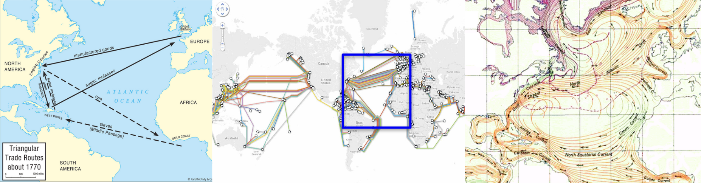

From left to right:
Triangular Trade Routes, Undersea Internet Cables, North Atlantic Gyres
all from wikicommons
We come to the question of medium. For this project, I consider the medium the transfer of data, visualized through digital or physical means. Wind direction is grabbed from a wide network of weather stations, satellites, and radars. The node at which the current weather data is accessed depends on the place that is called. This information is collected in real time, through a series of servers connecting with servers, computers interfacing with each other, calls and responses.
The Application Programming Interface is the (inter)face through which I collect weather information. To interact with the (inter)face, you make a call.
To call is to request, to demand, to cry.
The internet, like weather, is often considered intangible, and digital space a disembodied one. Yet, wireless connection is only used within local contexts; the internet is, fundamentally, wired. Your local router is connected to underground cables, which route to a carrier box, which connect to a regional center, which connect to other regional and national centers. What meaning can we glean from its material passage?
The first transatlantic telecommunications cable was laid on the ocean floor in 1858, and iterations of undersea telephone cable systems operated well into the 1970s. Today, transatlantic cables are all fiber optic. Though some telecommunication still operates on satellites, these submarine cables carry almost all of the global passage of data; the cloud is, fundamentally, infrastructural. The call I have made in Chicago passes undersea, underground, and through the air to the place I am calling to, and back again.
Along with the Suez canal and the American railroads, the cable was laid as part of the globalist project to connect.
Sitting now, under globalization's shadow, I trace the future-seeking tendencies of these European descendants to expansionism.
In Deep Down Tidal, Tabita Rezaire compares the paths that data passes along the seafloor to the Triangular Trade routes; from the 16th to 19th centuries, people from Africa were forcibly enslaved and sent to the Americas, where they labored on plantations to produce raw goods such as sugar and tobacco. These goods were then exported to New England and England, the manufactured products of which were then sent to Africa. This “triangle” of labor, manufacturing, and products is colloquially termed the “Triangular Trade.” This route was impacted by the North Atlantic Gyre, which causes a circular current in the pathing of the trade route. Although today data passes in multiple directions, the cables are still on the fringes of the gyre. The passage of data crosses the same ocean and traces the same routes as the Spanish explorers in 1492 and, later, slave ships throughout the next three centuries. There are over 35 thousand recorded voyages that carried enslaved Africans, whose forced labor made up the foundation of this trade; the global project is violent, and its violence echoes into the present. Although I am calling for the wind, the call is material, geographic, and grounded. It is grounded not only in the sense of physical material, but also in a history of labor, exploitation, and violence. What does a call which is propelled along these historic and geographic routes represent?